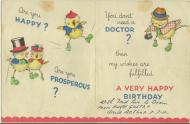

1945
FRIDAY 5th JANUARY

FRIDAY 26th JANUARY
MONDAY 19th FEBRUARY 1945
|
. NervousI found a paper on Mrs. Wright’s desk with my name on it. It said “Brian Williams, rather nervous” which is true. |
MONDAY 12th MARCH
Today’s special dateI went to school and told Mrs. Wright that today is the 12th of March 1945 so can we write it 12.3.45 in our books? She said yes. I came home with Peter Cook, whose father is a teacher at Hartfield Crescent Senior Boys School, and told him about the date. He had not noticed it. While I was playing with Peter, Mr. Cook came and showed us the Birmingham Mail which said that today was 12345. There will never be another day like this for a hundred years, except the 23rd of April 1956. |

School report for term ending 27th January 1945 |
TUESDAY 27th MARCH 1945
Lloyd George is deadLloyd George died last night aged 82. He was “the man who won the War.” It is a pity that he has died before this one has ended. He was born in Manchester on Saturday 17th January 1863. [His Principal Private Secretary and biographer A.J. Sylvester will become my close friend.] |
FRIDAY 30th MARCH
|
Today is Good Friday. |
TUESDAY 10th APRIL 1945
A secret societyPeter Cook and I have started a Secret Society. His father has made him a rapier and says we should be the Blue Cockade. |
THURSDAY 12th APRIL
|
I am keeping the records of the Secret Society. I have printed some of the information with my John Bull Printing Set and purple ink and I am keeping it in my pocket folded up. I have also made a map of Greenwood Avenue showing [the central reservation and] all the trees and bushes and holes in the bushes where we can crawl through if necessary. We must be able to escape from Rubberneck. We have done some detective work and found that his real name is Leonard Arthur Withers and that he lives in Northanger Road. |
FRIDAY 13th APRIL
|
I found a piece of paper in the classroom today where Margaret Hibberd sits. It has got several columns of numbers all between 1 and 9 and I cannot make sense of them. I have tried adding them up downwards and sideways and they make no sense at all. I think she is on to us and it is a secret message in code. I should not have told her about our Secret Society as she is not a member. |
WEDNESDAY 18th APRIL
|
I still can’t solve the mystery of the piece of paper with the numbers on. |
THURSDAY 19th APRIL
Secret of the numbersI showed Margaret the piece of paper with the numbers on and asked her if it was a Secret Code. She said no, it was how many marks all the children in the class got for reading, and she laughed at me. |
FRIDAY 20th APRIL
|
I am very upset because Peter Cook says I can’t be in the Secret Society any more. There were only two of us in it and there was nothing to detect anyway, |
SATURDAY 28th APRIL
Mussolini killedMussolini has been killed in Italy. |
MONDAY 30h APRIL 1945
Hitler is deadWe heard on the wireless that Hitler is dead. The War will soon be over now. |
TUESDAY 8th MAY 1945
VE DayThe War is over. It is VE Day. We are going to a party in the street Mammy has made jam tarts and cakes and sandwiches. |
SUNDAY 13th MAY
|
There was a Victory Parade in Victoria Square. |
MONDAY 21st MAY
|
Today is Whit Monday holiday. |
FRIDAY 25th MAY
Winston ChurchillI went to cubs tonight. Mr. Harvey always gives me The Scout every week when he has read it. There is a nice picture on the front of the King and Queen and the two Princesses and Mr. Churchill waving to the crowd on VE Day |
THURSDAY 7th JUNE 1945
Caned at schoolMrs. Wright gave me the cane today for talking in class, but it was Malcolm Moore in the desk behind me who was talking. I turned round and shushed him, not wanting him to get into trouble, but Mrs. Wright saw me and said who was that. I blushed and she told me to stand in the corner, then at the end of the lesson she caned me on both hands. I have not told Mammy and Daddy.
|
THURSDAY 5th JULY 1945
|
We had the day off from school. Mammy and Daddy went to Dolphin Lane School to vote tonight. |
FRIDAY 6th JULY
SATURDAY 7th JULY
MONDAY 16th JULY
ConsciousnessIn the playground at playtime I told Margaret that each life we live is taking us nearer to God, and I drew circles in the air with my finger going higher and higher making a cone shape. |
WEDNESDAY 25th JULY
THURSDAY 26th JULY
Labour win!I painted a red rose into my painting book today and signed it with the date. [jpg] We are very pleased because the Labour Party have won the Election. Mr. Attlee is the new Prime Minister. As we are working class we shall be all right now. It is the first Labour government ever [with an over-all majority]. Our new M.P. for Acocks Green is Mr. Henry Usborne (Labour). Results:— Labour 393, Conservative 197, Liberal 12, National Liberal 11, Independent 8, National 2, Communist 2, Irish Nationalist 2, Communist 1. Labour majority 145. Out of 478 Liberal candidates 319 lost their deposits (£150), and 97 out of 100 Communist candidates. |
TUESDAY 31st JULY
10 todayIt is my 10th birthday today. I am now in double figures. I have had some birthday cards. From Clarice |

From Aunt Greta and Uncle Arthur |
MONDAY 6th AUGUST 1945
|
. The Atom BombIt is Mammy’s birthday today. I heard on the wireless that the Americans have dropped the Atomic Bomb on Japan. It is bigger than all other bombs put together. |
WEDNESDAY 15th AUGUST
VJ DayThe Japanese have surrendered so the War is over. It is VJ Day and everyone is very excited because we are going to have a party in the street. Mammy says she can remember when the Great War ended in November 1918 and she was 6. She stood on a chair with all the children. They all waved flags and sang Land of Hope and Glory. |
SATURDAY 8th SEPTEMBER 1945
RhylWe have come on holiday to Rhyl for a week and I remember it from when we were here before the War. We stayed then at 8 River Street but this is a different place. I got a lot of L.M.S. engine numbers today. We caught the train at New Street Station and had to change at Crewe and Chester. |
MONDAY 10th SEPTEMBER
|
A beach photographer was by the pier and he took some photos of us. [jpg] |
WEDNESDAY 12th SEPTEMBER
This Happy BreedWe have got the photographs and they are very good. When I look through the magnifying glass I can see that This Happy Breed is on at the Pavilion Theatre. [jpg]
|
SATURDAY 15th SEPTEMBER
Engine numbersWe returned home this afternoon after a lovely holiday in Rhyl. I got more engine numbers today. |
MONDAY 17th SEPTEMBER
|
Julia was 4 today. We have gone back to school. |
SATURDAY 29th SEPTEMBER
First visit to St. AndrewsDaddy was going to the football match and I asked him if I could go too. We went on the 11 Outer Circle bus to the Swan and then caught the 94 trolley bus to St. Andrews. It was very exciting. Birmingham City won 5–nil against Swansea Town. Birmingham City:— Merrick; Duckhouse, Stanton; Dearson, Turner, Harris; Mulraney, Jones, Duckhouse, Bodle, Edwards. Bodle scored 2, and Duckhouse, Jones and Mulraney the others. |
SUNDAY 30th SEPTEMBER
|
I cut the result of Blues’ match out of The People and stuck it in the Blues’ News programme which I got yesterday. |
SATURDAY 6th OCTOBER
The Blues score 8Dad took me to the match again and the Blues beat Tottenham Hotspur 8-0!. We stood in the same place at the bottom of the steps to the left of the goal at the Tilton Road end. The Blues are the best team in the country and Gilbert Merrick is the best goalkeeper. Birmingham City: — Merrick; Duckhouse, Jennings; Harris, Turner, Owen; Mulraney, Dougall, Massart, Bodle, Edwards. All the forwards scored! — Mulraney (2), Dougall, Massart (2) Bodle and Edwards, and also Duckhouse. |
TUESDAY 9th OCTOBER 1945
Grammar School examsI went on the bus to Camp Hill to take the exam for King Edward’s Grammar School. |
WEDNESDAY 10th OCTOBER
|
I went to Camp Hill again. The exams were not too difficult. I watched the L.M.S. trains go by. They were all goods trains. |
SATURDAY 13th OCTOBER
|
Blues won 1–0 away against Tottenham Hotspur. |
SATURDAY 20th OCTOBER
|
Blues lost 2–1 away against Brentford. |
SATURDAY 27th OCTOBER
|
Dad and I went to St. Andrews to see Blues play Brentford. They won 1–nil. Massart scored. Birmingham City:— Merrick; Duckhouse, Jennings; Dearson, Turner, Harris; Mulraney, Dougall, Massart, Bodle, Edwards. |
SATURDAY 3rd NOVEMBER 1945
|
We went to St. Andrews this afternoon to see Blues play Chelsea. They won 5–2. Bodle (2), Jones, Turner (a penalty), and Edwards scored. Birmingham City:— Merrick; Duckhouse, Jennings; Dearson, Turner, Harris; Mulraney, Dougall, Jones, Bodle, Edwards. |
SATURDAY 10th NOVEMBER
|
Birmingham City won 3–2 at Chelsea, which is in London. |
FRIDAY 16th NOVEMBER
|
I have passed for Camp Hill and shall start there next September. Everyone is very pleased. |
SATURDAY 17th NOVEMBER
|
Blues lost 5–1 against Millwall in London. |
SATURDAY 24th NOVEMBER
|
This afternoon we went to the match as usual. Blues beat Millwall 4–nil. Bodle, Jones and Edwards (2) scored. Birmingham City:— Merrick; Duckhouse, Jennings; Harris, Turner, Mitchell; Mulraney, Dougall, Jones, Bodle, Edwards. |
SATURDAY 1st DECEMBER 1945
|
Blues drew 1–1 at Southampton. |
SATURDAY 8th DECEMBER
|
We went to see Blues play Southampton this afternoon. They won 4–nil. Bodle (2), Duckhouse and Edwards scored. Birmingham City:— Merrick; Dearson, Jennings; Harris, Turner, Mitchell; Mulraney, Dougall, Duckhouse, Bodle, Edwards. |
SATURDAY 15th DECEMBER
|
Blues won 2–nil away to Derby County. |
SATURDAY 22nd DECEMBER
|
Dad and I went to St. Andrews to see Blues play Derby County. They won 1–nil. Birmingham City:— Merrick; Dearson, Jennings; Harris, Turner, Mitchell; Mulraney, Dougall, Duckhouse, Bodle, Edwards. Bodle scored. |
TUESDAY 25th DECEMBER
|
I have had a lot of Christmas present and Clarice and Julia have also. I have got Film Pictorial Annual 1939, which is full of beautiful film star pictures and articles. Dad and I went to St. Andrews this morning to see Blues play Leicester City. We went in at the Cattell Road entrance instead of Garrison Lane. I have not been in the Spion Cop stand before. It was very good as we were by the half-way line. Blues won 6–2. Wilson Jones scored twice, Dougall, Bodle, Edwards and Mulraney got the others. Birmingham City:— Merrick; Duckhouse, Jennings; Harris, Turner, Mitchell; Mulraney, Dougall, Jones, Bodle, Edwards. |
WEDNESDAY 26th DECEMBER
NumerologyToday is Boxing Day and I have been reading my Film Pictorial Annual 1939. There are pictures and stories of Snow White and the Seven Dwarfs, The Adventures of Tom Sawyer, Young and Innocent and other films and articles. There is also a very interesting article called “Numbers Rule Your Life.” I have worked out that my birth number is 11 and my name number is 11. It is called Numerology. I am very interested in numbers. Blues were playing Leicester City again today and won 1–nil. |
SATURDAY 29th DECEMBER
|
We went to see Blues play Coventry City. They won 2–nil. Edwards and Dougall scored. Birmingham City:— Merrick; Duckhouse, Jennings; Harris, Turner, Dearson; Mulraney, Dougall, Jones, Bodle, Edwards. |
Previous chapter || Next chapter || Index || Search